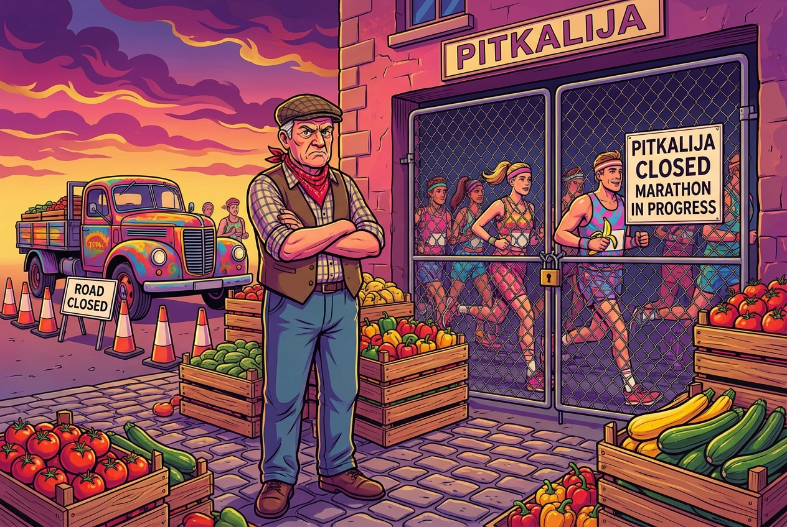

l
lArchive
-
20/02/26, 10:00 AM Developer Files Plans for "Fantasy Funpark" on Public Land
-

19/02/26, 5:15 PM Farmers Furious as Malta Marathon Shuts Down Pitkalija: "We Can't Compete with Joggers"
-
19/02/26, 10:30 AM The Bormla Panther: Malta Mobilises After Terrifying Stray Cat Sighting
-
19/02/26, 10:45 AM Occupy Land Illegally for Decades? Here's Your 50-Year Deal, Sir
-
18/02/26, 6:00 PM President Solves Voter Apathy: "Have We Tried Paying Politicians More?"
-
18/02/26, 6:15 PM Robert's Billion-Dollar Seat: Will Malta Join Trump's VIP Club or Listen to Jason's Common Sense?
-
 17/02/26, 10:35 PM The Standard of Charity: Why Some NGOs Get Civil Servants and Others Get Ta' Qali Gravel
17/02/26, 10:35 PM The Standard of Charity: Why Some NGOs Get Civil Servants and Others Get Ta' Qali Gravel -
17/2/26, 8:40 PM Malta's Carnival Blown Away: The Wind, They Say, Was 'Unexpected'
-
17/2/26, 2:45 PM Robert's Billion-Dollar Seat: Will Malta Join Trump's VIP Club? (Early Reports)
-
 17/2/26, 11:30 AM National Priorities: Half of Malta Braces for Storm, Other Half Braces for Botox
17/2/26, 11:30 AM National Priorities: Half of Malta Braces for Storm, Other Half Braces for Botox -
 17/2/26, 11:00 AM Malta Celebrates Record Recycling, As Marine Teams Discover New Plastic Fish Species
17/2/26, 11:00 AM Malta Celebrates Record Recycling, As Marine Teams Discover New Plastic Fish Species -
16/2/26, 6:30 AM Four Portals, One Judge, Zero Agreement: The Chief Justice Showdown
-
16/2/26, 2:45 PM PN Bravely Asks What People Want, Hopes It's Not Too Inconvenient